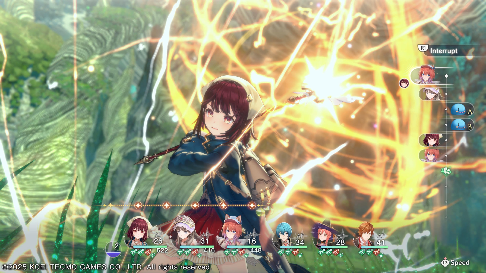
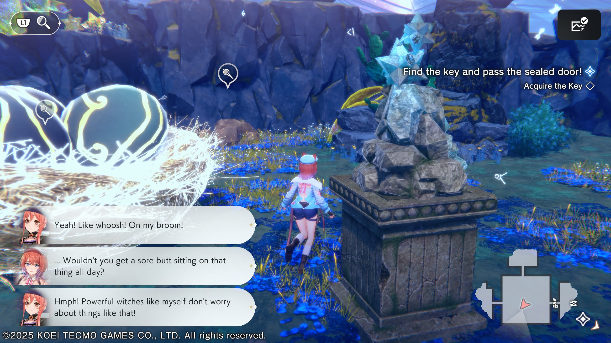
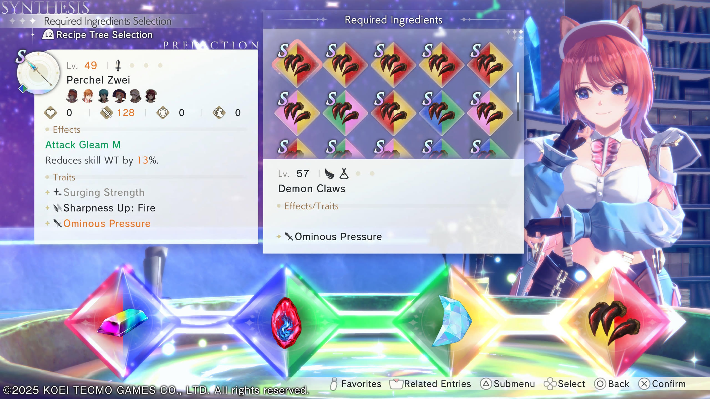
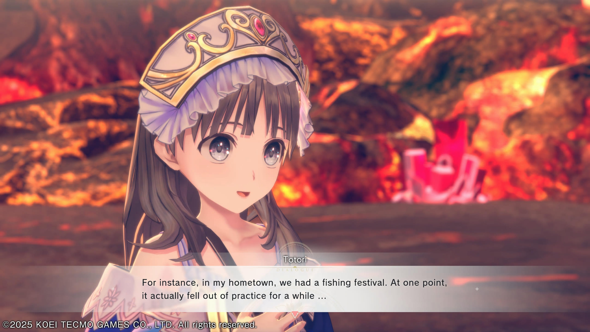

1game1week - Week 47 (11/19/25) - Atelier Resleriana: The Red Alchemist and the White Guardian
Hey all! It's week 47! (11/19 -> 11/26)
I'm really excited. Starting Friday, my friend Billy is coming over to visit me. We're gonna be playing games, hanging out and working on some awesome projects I can't wait to write documentation on.
I took Thursday and Friday off from work just for it. Thursday will mostly be a "make sure the apartment is spotless" day, though...
We're very likely going to be playing a co-op game that will end up being one of the posts for 1g1w. I'm looking forward to it!
Oh! And since we share a teacher for Japanese classes, I was thinking it'd be really funny if he logged into my class (with facecam). Our teacher will probably be like "え？何ですか？", while we're trying to not laugh. She's a really fun teacher, so I doubt we'd be yelled at or anything.
Anyways!
New games from 11/12 -> 11/18:
None! (Total 19)
Currently, my backlog is at +5 (lower is better, -1 from last week).
And onto 1g1w. Once again, a game is considered "beaten" if I've accomplished the main objective of the game.
GAME: Atelier Resleriana: The Red Alchemist and the White Guardian
PLATFORM: PS5
GENRE: RPG
STARTED ON: 11/8
BEATEN ON: 11/16
TOTAL PLAYTIME: 42 hours 31 minutes IGT / 44 hours 15 minutes via PS-Timetracker
This week, I played Atelier Resleriana. It's a new release from September, and the latest (ish, since Ryza DX just came out) in the Atelier series.
In short, this game is a huge celebration of the franchise and had some great adjustments from some of my complaints from Yumia and returned to a combat / alchemy style I prefer. It might be more so that Yumia was an "experiment". Either way, Resleriana was incredibly fun. I think it hits a very good middleground between both modern and classic Atelier, which is perfect.
Instead of going with Yumia's action-RPG-oriented combat, Resleriana returns to a time-card based combat system. To non-Atelier fans, it's essentially a turn-based system that freezes everything until you've taken your turn, unlike something like the ATB variation in Ryza. The turn order is based on your SPD stat, but there are various skills and abilities that allow you to modify the turn order on the fly. For example, a skill may push back an enemy's turn by one card, or may bring an ally's turn up by one card.
To add to this, there's a meter called the Unite Gauge that lets you string various character actions together via "Multi-Actions" or use "Interrupts". With Multi-Actions, you can use your non-active (background) party members' combat skills, as well as switch characters from the background to the foreground without having to waste a turn and deal damage on the way out.
Interrupts work similarly, but allow you to use a character's equipped item (like healing items or damage-dealing items) without switching characters. It works well if you need to heal on the fly. Every attack has a specific element tied to it: Phys, Magic, Fire, Ice, Thunder and Wind, with each enemy having specific weaknesses / resistances. Though, some of the elemental skills were horribly underrepresented. Ice, for example, only had one skill across the entire party, while Wind had like, six or so. The idea is to work through it via items, but those have limited uses so it got a teensy bit annoying.
This battle system also includes a perfect guard system (although it just reduces damage, it doesn't nullify it) that's done by pressing a button on the enemy's turn. There's actually a visual indicator on the characters: they get a ring around their head. When the ring turns red is the time to perfect guard. I found the ring to be a little annoying, though. It's easier to just look at the enemy's movement. As a tiny side note, you can select to make the battles go at 3x speed. It's helpful when you're trying to speed up your own animations, but given the nature of perfect guard, making the enemy's animations go at 3x speed makes it a bit annoying to use / turn off and on. At some point, I just accepted 1x speed.
It also featured a buff / debuff system. As much as I love buff / debuff, it was a little annoying in this game because they were only specifically listed with tiny icons under an enemy's health bar, with different icons meaning different things, even within specific stats. For example, a slightly broken shield meant DEF was -10%, a full shield meant -30% (I think). It made it confusing. Even more annoying was your party's buffs and debuffs, which were right under the character portraits and got truncated to three buffs / debuffs. With how many things you can buff / have your enemies debuff, this was a very poor UI choice, in my opinion.
Maybe something clearer could've been having a list of buffs / debuffs of the current party member off to the side, under the time-card display.
There's more details to the battle system, but I've probably yapped about it long enough. I did enjoy it a lot, despite my complaints.

Resleriana doesn't feature an open world like Atelier Yumia, which I was happy about. Instead, there are (arguably small, but perfect sized) gathering areas. I'll say it's a bit unfortunate that gathering areas still lack, from what I noticed, weight in the materials gathered.
It seems weird to explain, but in classic Atelier, every action has an inherent weight to it. Going to a gathering area and getting materials gave you a limited amount of materials and consumed time, which was a currency, which made later synthesis bear a bit more weight into what you're spending time gathering. In both Yumia and Resleriana, you just hit environment set pieces around you and get a variety of materials. I'll touch on the actual alchemy later on, but since there's less "weight" in gathering, there's less "weight" in alchemy as well.
Since you get so much material without actually needing to waste time and various materials are shared between locations, there's few reasons to go back to a specific gathering area, making them a little less memorable. In my entire playthrough I only had to go to a specific area one time. As a random tangent, the game actually has a "tracking" system for materials. If you select a specific material in the Items screen and press the Options button (on PS5) to track it, it will show you exactly which gathering spots within which gathering areas it's found. Really neat QOL.
Additionally, the game has a variety of (for lack of a better term) dungeons that are dynamically/procedurally-generated that also function as gathering areas. If I had to describe it, it's similar to how Tartarus works in Persona 3. They're also filled with RNG elements such as floors with "powerful" enemies, or floors that have special enemies that drop increased Cole (money), XP and SP for its skill tree.
In fact, now that I'm thinking more about it, it kind of does work exactly like various different mini-Tartarus. Tartaruses. Tartarusi. If you will.
I only have two real complaints: first, sprinting. Sprinting is done by holding the R1 button while moving the left stick. It's simple, but when you're going through these areas for long stretches of time, you really end up wishing it was a toggle. The way I've seen it done often is with L3 as a toggle, and when you return the stick to neutral, it returns to normal speed. There's nothing inherently wrong with R1 but it gets annoying to hold the button all the time.
One more thing is minor, but it's a really good QOL feature: since we're comparing to Tartarus / Persona 3, that game has a feature (funnily enough, on R1, I think) that lets you go to the next floor if you have already found the stairs to get there, regardless of where you actually are in the floor.
Since everything is procedurally-generated, there's always a fair chance that you can find the exit before exploring the floor fully and looting it for stuff like treasure chests, or beat strong enemies, etc. If you find the exit, you cannot just warp to the next floor, so you have to do all your business and then run over to the exit. It's not the end of the world, but it would've been a really nice quality-of-life feature since the game encourages you to explore all the floors fully.

The alchemy system is something I was not a fan of in Yumia. The system in Resleriana is a lot more like something I'd expect from Atelier, and in fact it reminded me very much of the system in Ryza (although I was informed it's more than anything just an evolution of Resle1's system).
The gist of it is that your ingredients are divided into a right and left color referred to as Gift Colors. As you lay out your ingredients, the expectation is that you have to match the right color of your current ingredient to the left color of your next ingredient, creating a color chain. This lets you pass traits over from your ingredient to your desired synthesis target.
One more really cool part of this is that you're able to use something similar to Ryza's Recipe Morphing. To do this, you have to place a specific ingredient outlined by a recipe the game tells you in a specific ingredient slot for the particular result you're looking for. If a desired weapon has me put any ingot in the third ingredient slot, placing the ingot that is tiered higher (Ingot < Silvalia < Gold Eisen, etc.) allows you to use Recipe Morph to synthesize the weapon tiered at the same level as the ingot you placed (although this is done linearly with no way to jump between tiers)
There are a few other aspects to alchemy, such as Enhancements that were a little less important overall than the normal system, but are great nonetheless.

I tend to never go too in-depth with the story / overall narrative, but I'll try to cover it in a very surface-level view. The story stars Rias, Slade and various different characters from the Atelier franchise known as "wanderers" in their quest to restore Hallfein, Rias and Slade's hometown which was devastated 12 years prior to the game's events by a mysterious event. Through this journey, Rias and Slade use Rias's newfound knack for alchemy to aid in the town's restoration efforts as well as uncover the secrets and lost history of Hallfein.
It's simple as a story but keeps you on your toes with new revelations that make it entertaining. It's an engaging story with fun characters.
One of the best parts, in my opinion, are the returning characters. They're filled with moments specifically meant to reward returning Atelier fans, as well as hook new fans into playing the older titles. For example, I played Atelier Totori earlier this year, so every little moment where Totori talked about the events of her game was amazing. It felt like catching up with an old friend and talking about the old times. At the same time, there were a good chunk of characters that I hadn't met before, such as the characters from the Dusk trilogy, that tugged at me and made me want to play their games which are currently sitting in my backlog.
A problem with this is that the game was not shy about spoilers. A major plot point of Atelier Totori is "what happened to her mom?". You're not meant to know until the very end of the game... and it's revealed in this game, taking away the tension a first-time player would otherwise have while playing Atelier Totori. The same thing is done for Atelier Ryza, where they go a step further and just say screw it and describe the entire plot. I guess it's fine assuming your audience probably played your games, and I personally wasn't spoiled anyway, but wouldn't it be nice to leave the suspense there for newcomers to the series?

Overall: Atelier Resleriana: The Red Alchemist and the White Guardian scratched a good itch while delivering solid combat, a good alchemy system, and returning to simpler gathering areas (with the added twist of its procedurally-generated dungeons). All this, coupled with an entertaining story with twists and turns that keep you engaged and fun original characters, as well as various returning characters that are great fanservice to Atelier fans. Solid game.

Thanks for reading! If you need to contact me for any reason, please feel free to email me at aru@hoshikawa-aru.com.